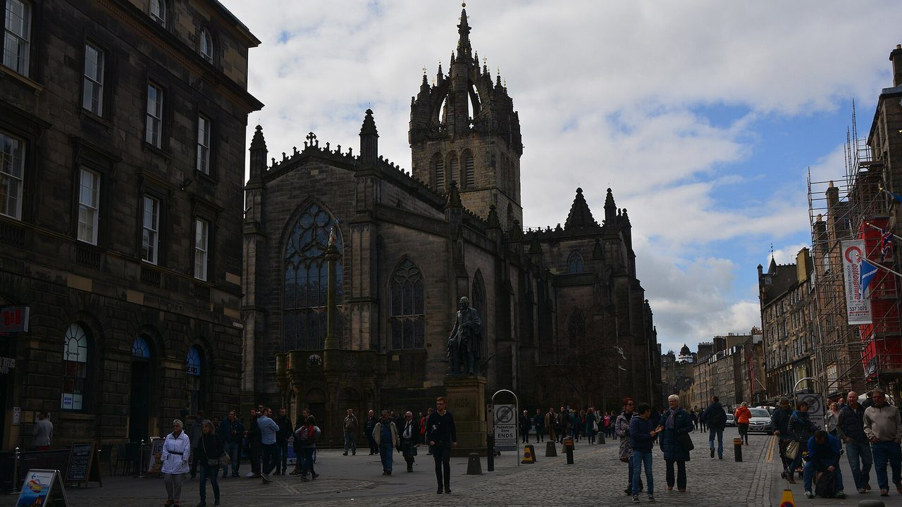

Race, Edinburgh Fringe

Behind
Best +0:01
371W
Target 418 W-47 W
- Cadence
- 87rpm
- Heart
- 140bpm
- Speed
- 26.5km/h
Work11 of 17
1:05
Next: · 0:10 at level 24
+0.0%
50 m climbed
5.41 km
19
Resistance / 32
Solo races your best-time ghost: position reads Ahead or Behind, and solo alone gets a Pause button. Frozen at 12:25.